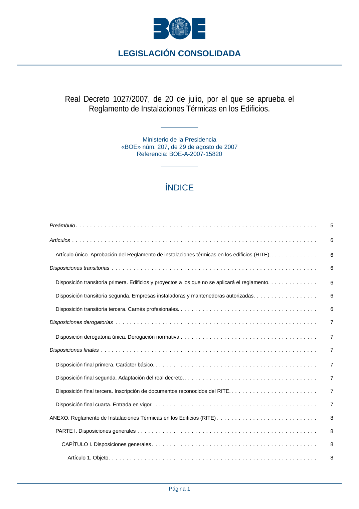

RITE · Fragmento de PDF p1 · versión 2022-08-02 · capa asociada
Formatos: JSON compacto · Markdown · PDF fuente
Ámbito del documento · texto del ámbito · documento y tablas
ID técnico a0001 · PDF pág. 1-4 · jerarquía no validada por persona · no es capítulo: fragmento_portada · padre: raíz · literal original en el contenido: «Real Decreto 1027/2007, de 20 de julio, por el que se aprueba el Reglamento de Instalaciones Térmicas en los Edificios.»
Real Decreto 1027/2007, de 20 de julio, por el que se aprueba el Reglamento de Instalaciones Térmicas en los Edificios. Reglamento de Instalaciones Térmicas en los Edificios. Ministerio de la Presidencia «BOE» núm. 207, de 29 de agosto de 2007 Referencia: BOE-A-2007-15820 ÍNDICE Preámbulo ................................................................... 5 Artículos.................................................................... 6 Artículo único. Aprobación del Reglamento de instalaciones térmicas en los edificios (RITE).............. 6 Disposiciones transitorias......................................................... 6 Disposición transitoria primera. Edificios y proyectos a los que no se aplicará el reglamento.............. 6 Disposición transitoria segunda. Empresas instaladoras y mantenedoras autorizadas.................. 6 Disposición transitoria tercera. Carnés profesionales. ...................................... 6 Disposiciones derogatorias........................................................ 7 Disposición derogatoria única. Derogación normativa....................................... 7 Disposiciones finales............................................................ 7 Disposición final primera. Carácter básico. ............................................. 7 Disposición final segunda. Adaptación del real decreto...................................... 7 Disposición final tercera. Inscripción de documentos reconocidos del RITE. ........................ 7 Disposición final cuarta. Entrada en vigor.............................................. 7 ANEXO. Reglamento de Instalaciones Térmicas en los Edificios (RITE) ............................ 8 PARTE I. Disposiciones generales.................................................. 8 CAPÍTULO I. Disposiciones generales .............................................. 8 Artículo 1. Objeto.......................................................... 8 LEGISLACIÓN CONSOLIDADA Página 1 Artículo 2. Ámbito de aplicación................................................. 8 Artículo 3. Responsabilidad de su aplicación. ........................................ 9 Artículo 4. Contenido del RITE.................................................. 9 Artículo 5. Remisión a normas. ................................................. 9 Artículo 6. Documentos reconocidos.............................................. 9 Artículo 7. Registro general de documentos reconocidos para el RITE........................ 10 Artículo 8. Otra reglamentación aplicable........................................... 10 Artículo 9. Términos y definiciones............................................... 10 CAPÍTULO II. Exigencias técnicas................................................ 10 Artículo 10. Exigencias técnicas de las instalaciones térmicas. ............................. 10 Artículo 11. Bienestar e higiene................................................. 10 Artículo 12. Eficiencia energética, energías renovables y energías residuales. ................... 11 Artículo 13. Seguridad....................................................... 11 CAPÍTULO III. Condiciones administrativas........................................... 11 Artículo 14. Condiciones generales para el cumplimiento del RITE. .......................... 11 Artículo 15. Documentación técnica de diseño y dimensionado de las instalaciones térmicas.......... 12 Artículo 16. Proyecto. ....................................................... 13 Artículo 17. Memoria técnica. .................................................. 13 Artículo 18. Condiciones de los equipos y materiales.................................... 14 CAPÍTULO IV. Condiciones para la ejecución de las instalaciones térmicas...................... 14 Artículo 19. Generalidades.................................................... 14 Artículo 20. Recepción en obra de equipos y materiales.................................. 15 Artículo 21. Control de la ejecución de la instalación. ................................... 15 Artículo 22. Control de la instalación terminada....................................... 16 Artículo 23. Certificado de la instalación. ........................................... 16 CAPÍTULO V. Condiciones para la puesta en servicio de la instalación......................... 16 Artículo 24. Puesta en servicio de la instalación. ...................................... 16 CAPÍTULO VI. Condiciones para el uso y mantenimiento de la instalación....................... 18 Artículo 25. Titulares y usuarios................................................. 18 Artículo 26. Mantenimiento de las instalaciones. ...................................... 18 Artículo 27. Registro de las operaciones de mantenimiento................................ 19 BOLETÍN OFICIAL DEL ESTADO LEGISLACIÓN CONSOLIDADA Página 2 Artículo 28. Certificado de mantenimiento........................................... 19 CAPÍTULO VII. Inspección..................................................... 20 Artículo 29. Generalidades.................................................... 20 Artículo 30. Inspecciones iniciales................................................ 20 Artículo 31. Inspecciones periódicas de eficiencia energética.............................. 21 Artículo 32. Calificación de las instalaciones......................................... 21 Artículo 33. Clasificación de defectos en las instalaciones................................ 22 CAPÍTULO VIII. Empresas instaladoras y mantenedoras.................................. 22 Artículo 34. Generalidades.................................................... 22 Artículo 35. Empresas instaladoras y empresas mantenedoras de instalaciones térmicas de edificios..... 22 Artículo 36. Habilitación de empresas instaladoras y empresas mantenedoras................... 22 Artículo 37. Requisitos para el ejercicio de la actividad.................................. 23 Artículo 38. Libre prestación................................................... 23 Artículo 39. Registro........................................................ 24 Artículo 40. Ejercicio de la actividad.............................................. 24 Artículo 41. Carné profesional en instalaciones térmicas de edificios.......................... 25 Artículo 42. Requisitos para la obtención del carné profesional............................. 25 CAPÍTULO IX. Régimen sancionador.............................................. 26 Artículo 43. Infracciones y sanciones.............................................. 26 CAPÍTULO X. Comisión Asesora................................................. 26 Artículo 44. Comisión Asesora para las instalaciones térmicas de los edificios................... 26 Artículo 45. Funciones de la Comisión Asesora....................................... 26 Artículo 46. Composición de la Comisión Asesora..................................... 27 Artículo 47. Organización de la Comisión Asesora..................................... 27 Disposiciones adicionales......................................................... 28 Disposición adicional primera. Seguros y garantías de responsabilidad profesional.................... 28 Disposición adicional segunda. Obligaciones de información. ................................. 28 PARTE II.. INSTRUCCIONES TÉCNICAS............................................. 28 INSTRUCCIÓN TÉCNICA IT 1. DISEÑO Y DIMENSIONADO............................... 28 INSTRUCCIÓN TÉCNICA IT 2. MONTAJE........................................... 70 INSTRUCCIÓN TÉCNICA IT 3. MANTENIMIENTO Y USO................................. 74 BOLETÍN OFICIAL DEL ESTADO LEGISLACIÓN CONSOLIDADA Página 3 INSTRUCCIÓN TÉCNICA IT 4. INSPECCIÓN ......................................... 82 APÉNDICES................................................................ 85 APÉNDICE 1. Términos y definiciones.............................................. 85 APÉNDICE 2. Normas de referencia............................................... 91 APÉNDICE 3. Conocimientos de instalaciones térmicas en edificios ........................... 92

PDF fuente redistribuible: copia fiel enlazada en esta página (SHA256 verificado).